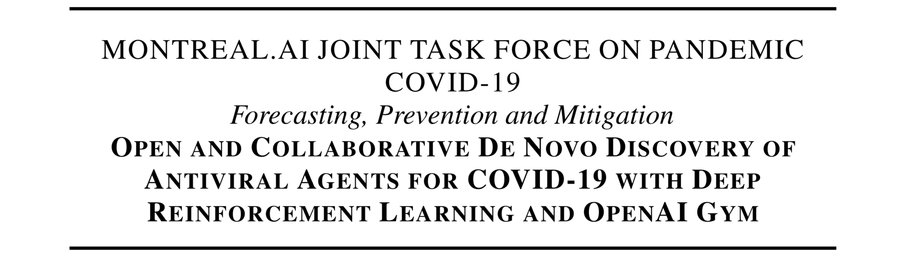

MONTREAL.AI JOINT TASK FORCE ON PANDEMIC COVID-19
Forecasting, Prevention and Mitigation
MONTREAL.AI
Open and Collaborative De Novo Discovery of Antiviral Agents for COVID-19 with Deep Reinforcement Learning and OpenAI Gym
Vincent Boucher, Founding Chairman at MONTREAL.AI
MONTREAL.AI proposes a novel, collaborative and open antiviral discovery approach: Discovering new molecules by gradually improving inhibitors of the coronavirus SARS-CoV-2 main protease (Mpro) with deep reinforcement learning, MCTS and the OpenAI Gym.
High level plan : http://www.montreal.ai/opencovid19.pdf
1. Develop an OpenAI Gym environment targeting coronavirus SARS-CoV-2 main protease (Mpro);
2. Deploy deep RL agents discovering new molecules (score is the negative of binding energy);
3. Synthesize and validate new antiviral agents in biomedical assays.
GitHub repository : https://github.com/MontrealAI/opencovid19
Hashtag : #AITaskForce
Invite link to join Montreal.AI Open and Collaborative Joint Task Force in Response to COVID-19 on Slack :
https://join.slack.com/t/montrealai/shared_invite/zt-2vk74zhg-EHP1LDotKLWS0aPuhr4yZQ